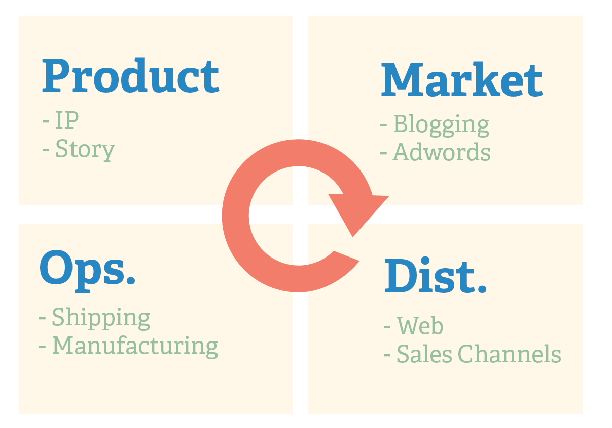
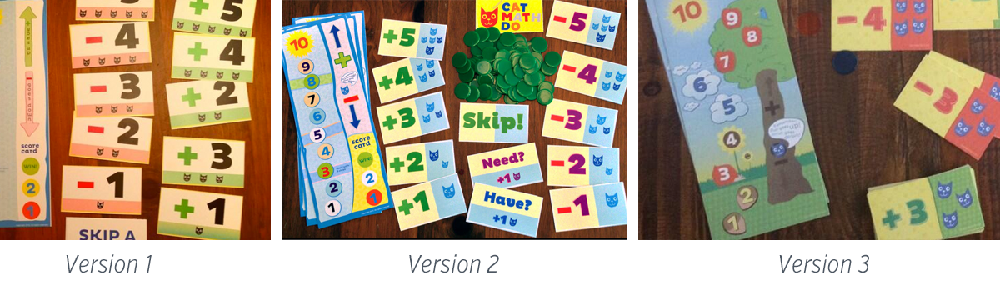
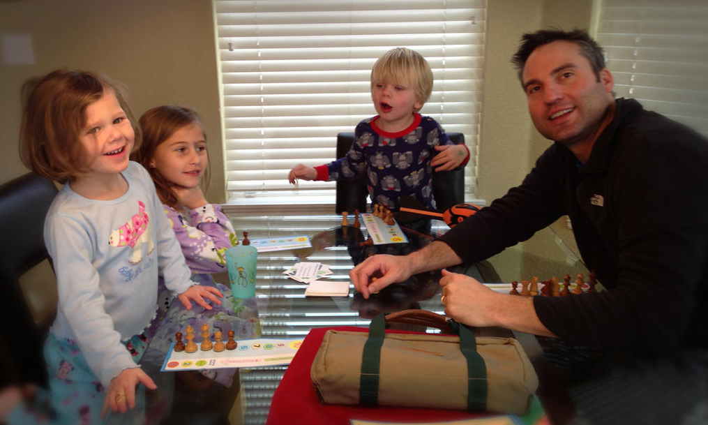
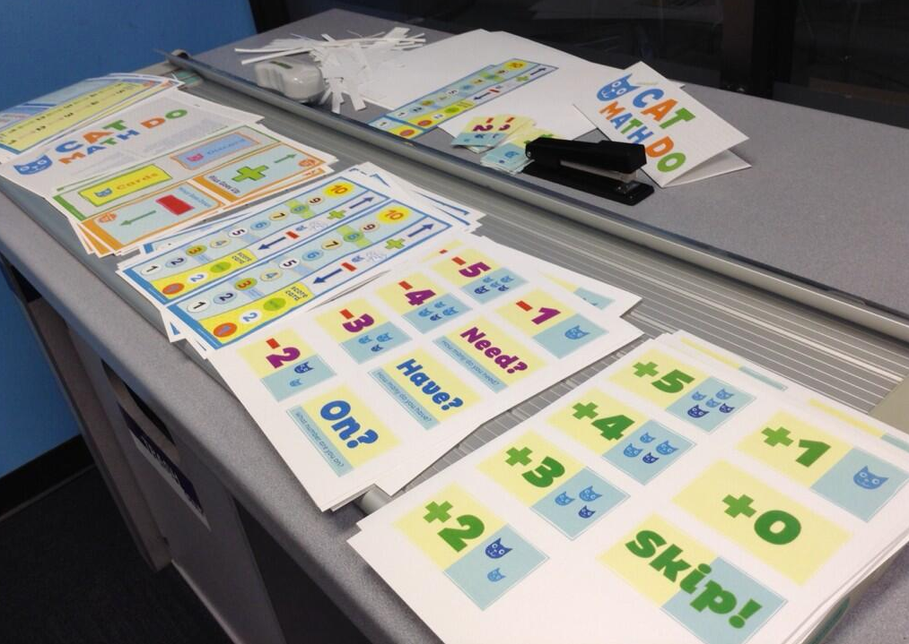

all posts >> Correct me if I'm wrong
the Spin Wheel
Jan 08, 2015
One of my favorite things is coming up with new ideas. Some have even said I come up with to many! Many of those ideas are around businesses or concepts I would hope to turn into some kind of cash flow making entity.
I've been working on Cat Math Do for over two years now. I came up with it to help teach my sons math. The game has been great for my family and I've wondered how to sell it. After designing rules and packaging I found myself focusing on smaller details that wouldn't really matter to the sale. But I wanted to see how far I could go with the game.
Being a one man band will require to do it 'all'. But what are the important alls? What and where do I focus? I came up with a process to try to keep me on track that I call the spin wheel. This is for the tinkerer who wonders if their side business could be something they could grow. The idea of this is to keep me from drilling down to a specific task that I might enjoy, but might not be the most important thing I should focus on.

It doesn't matter which one I start with, but that I have to make a pass on the others before returning to the same one.
Product
 Product is the unique item you want to offer. It's your content. I've gone through 3 drafts of Cat Math Do so far. I love designing and could easily just keep tinkering on these without lifting my head up. The Spin Wheel makes me stop designing and turn my attention to other important aspects
Market
My target market changes per iteration. My first target market was friends and family who would pay me, not with money, but with insight. Was this game fun for other kids to play? So, my first target audience was people I could sit and talk to. Who are you selling to and how are they going to hear it. This is not so specific to even divide into sales, tactics, or audience. The idea of this box is to think through who and how are they going to hear about my product. 
Operations
This is another broad topic how do I get it into their hands? Covers things like shipping, printing, packing, and others. 
Distribution
This is a broad thought of - how will they make the transaction? Are you selling the item on shopify, bookstore, through friends? The idea is 'how can I get your product and pay for it?' My first draft was distributed by me taking it to my friends house to play. The second draft was handed out to 7 families as focus groups. This third draft is the one I am trying to develop a way to sell it at a larger scale.
More from
Correct me if I'm wrong
Sites for Startups
I managed three different t-shirt companies with Basecamp. My love for Basecamp introduced me to Ruby on Rails. Ruby on Rails introduced me to the pattern known as 'CRUD'. CRUD stands for Create, Read, Update, and Delete. CRUD is the pattern for nearly...
Starting a business
If you think you need money, business partner, then you haven't found your business yet. If you do something because it's fun and you could make money at it then you have some ideas.
Jim Collins Describes the Hedgehog concept in his book good to great...